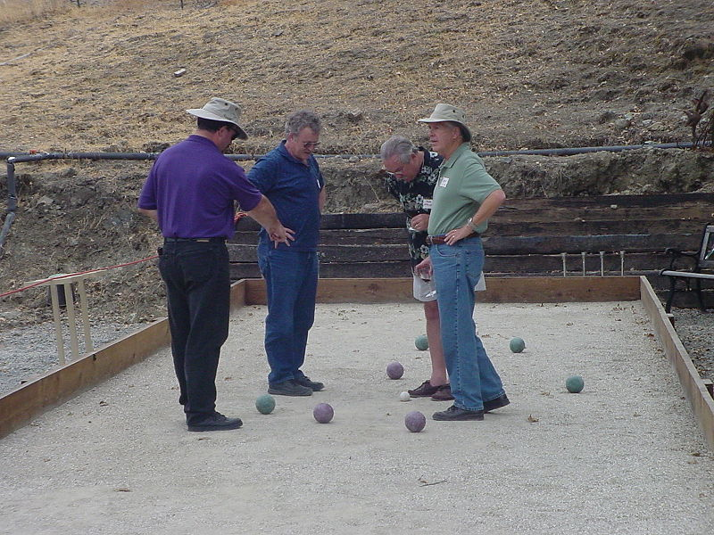
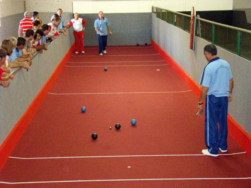

Bocha
Origem: Wikipédia, a enciclopédia livre.
"Bocce" From Wikipedia, the free encyclopedia
Clique aqui!A Bocha (português brasileiro) ou boccia (português europeu) é um esporte jogado entre duas equipes, cada qual tendo direito a seis bochas (bolas) na modalidade trio, quatro bochas na modalidade de duplas - duas para cada atleta -, e quatro também na modalidade individual. O esporte consiste em lançar bochas (bolas) e situá-las o mais perto possível de um bolim (bola pequena), previamente lançado. O adversário por sua vez, tentará situar as suas bolas mais perto ainda do bolim, ou "remover" as bolas dos seus oponentes. As canchas devem ter dimensões de 30,50 metros de comprimento, 4 metros de largura e altura uniforme de 30 cm. Com prévia autorização da Comissão Técnica Arbitral Internacional - CTAI , da Confederação Sul-americana de Bocha - CSB e da Confederação Brasileira de Bocha e Bolão – CBBB poderão ser utilizadas canchas com dimensões de 24 m a 27 m de comprimento. A maioria de pessoas que pratica o esporte é composta de idosos, mas o quadro vem mudando nos últimos anos com a adesão de jovens ao esporte.
A origem da bocha (conforme alguns historiadores) remonta a um jogo praticado no Antigo Egito e na Antiga Grécia, em que se usavam objetos de formatos esféricos - pedras redondas.
História
Para Roger Nelson Steiger, no livro: "O emocionante espetacular esporte da bocha",
parece
entretanto não haver dúvidas que o jogo de bocha é de origem italiana e de que seu
surgimento se deu no tempo do Império Romano,quando era praticado com o nome de
"boccie", sendo durante a expansão do Império levado pelos exércitos de ocupação a todos
os
povos por eles dominados.
Segundo o autor, já em 1500, o boccie era praticado na França, Itália, Espanha,
Portugal, Inglaterra, tendo sofrido daquele tempo até hoje várias transformações e agora
é visto como um esporte de considerável prestígio internacional.
Os latinos o propagaram profundamente durante a Idade Média, sendo o mesmo tão
popular
que é praticado nas praças públicas e nas ruas, a tal ponto que Carlos IV em 1319, e
também Carlos V e mais tarde o Patriarca de Veneza, em 1576, foram obrigados a proibir a
sua
prática.
Hoje em dia a prática deste esporte vem evoluindo cada dia mais, pois é um esporte
atrativo que envolve desde crianças até idosos. Hoje o bocha é mais praticado em canchas
sintéticas,de que não necessita tanto esforço para lançar as bolas, ao contrário da
areia de
que exige mais força.
Bocha no Brasil
Esta prática foi trazida para a América pelos imigrantes italianos, primeiro para a Argentina e mais tarde para outros países. Os estados de São Paulo, Santa Catarina e Rio Grande do Sul, que receberam grandes concentrações de imigrantes vindos da Itália, foram responsáveis pelo início do esporte no Brasil, que posteriormente se espalhou por Paraná, Rio de Janeiro, Espírito Santo e Minas Gerais. Este esporte vem sendo praticado em clubes, centros comunitários, empresas, sindicatos, paróquias, praças, praias e CTGs. O Brasil se fez representar em diversos campeonatos Sul americanos, a partir de 1951. O primeiro Campeonato Brasileiro de Bocha foi realizado em 1964, na cidade de São Paulo, com a participação do Rio Grande do Sul, São Paulo, Rio de Janeiro e Minas Gerais, sagrando-se vencedora a equipe do Rio Grande do Sul. Em 1987, na cidade de São Caetano do Sul, em São Paulo realizou-se o 1º Campeonato Brasileiro Feminino de Bocha. O primeiro Campeonato Sul Americano de Bocha foi realizado na cidade de Buenos Aires, Argentina, no ano de 1994. No ano de 2006 o Brasil conquistou seu primeiro Campeonato Mundial de Bocha, realizado na cidade de Montenegro, no estado do Rio Grande do Sul, numa vitória contra a equipe da Itália. Integrou a equipe campeã brasileira Rubens Barrichello, o avô do piloto de Fórmula 1, Rubinho Barrichello. Um dos maiores jogadores de bocha no Brasil é José Mazzer, mais conhecido como Zé do Salto. Reside atualmente na cidade de Salto (São Paulo) e possui no currículo, dentre muitos outros, 5 títulos dos Jogos Abertos do Interior (sendo o último deles conquistado dia 11 de novembro de 2010 em Santos pela equipe de São Caetano do Sul) e 10 Campeonatos Brasileiros. Zé do Salto é chamado de Pelé da Bocha, devido aos seus feitos no esporte.


BOCHA MUNDIAL - 2019
CAMPEONATO PAULISTA DE CLUBES
TABELA DOS JOGOS
MASCULINO - 1ª DIVISÃO
Resultados: Clique aqui!| 1ª RODADA - 16/02/2019 | |||||
| 5 | Caieras/Piquery A | 6 | x | 0 | AABB |
|---|---|---|---|---|---|
| 6 | Meninos B | 2 | x | 4 | Meninos A |
| 7 | Indiano | 0 | x | 6 | CDR Sao Jose A |
| 8 | MESC | 0 | x | 6 | Pinheiros |
| 2ª RODADA - 23/02/2019 | |||||
| 13 | Pinheiros | 6 | x | 0 | AABB |
|---|---|---|---|---|---|
| 14 | Caieras/Piquery A | 4 | x | 2 | Meninos B |
| 15 | Meninos A | 6 | x | 0 | Indiano |
| 16 | CDR Sao Jose A | 5 | x | 1 | MESC |
| 3ª RODADA - 09/03/2019 | |||||
| 21 | Meninos B | 1 | x | 5 | Pinheiros |
|---|---|---|---|---|---|
| 22 | Indiano | 2 | x | 4 | Caieras/Piquery A |
| 23 | MESC | 0 | x | 4 | Meninos A |
| 24 | AABB | 0 | x | 6 | CDR Sao Jose A |
| 4ª RODADA - 23/03/2019 | |||||
| 33 | CDR Sao Jose A | 4 | x | 2 | Meninos B |
|---|---|---|---|---|---|
| 34 | Pinheiros | 6 | x | 0 | Indiano |
| 35 | Caieras/Piquery A | 6 | x | 0 | MESC |
| 36 | Meninos A | 4 | x | 2 | AABB |
| 5ª RODADA - 30/03/2019 | |||||
| 41 | AABB | 3 | x | 3 | MESC |
|---|---|---|---|---|---|
| 42 | Indiano | 1 | x | 5 | Meninos B |
| 43 | Caieras/Piquery A | 3 | x | 3 | Pinheiros |
| 44 | Meninos A | 3 | x | 3 | CDR Sao Jose A |
| 6ª RODADA - 13/04/2019 | |||||
| 49 | Meninos B | 4 | x | 2 | MESC |
|---|---|---|---|---|---|
| 50 | AABB | 5 | x | 1 | Indiano |
| 51 | Pinheiros | 3 | x | 3 | Meninos A |
| 52 | CDR Sao Jose A | 2 | x | 1 | Caieras/Piquery A |
| 7ª RODADA - 04/05/2019 PROXIMO JOGO | |||||
| 57 | MESC | 0 | x | 0 | Indiano |
|---|---|---|---|---|---|
| 58 | AABB | 0 | x | 0 | Meninos B |
| 59 | Pinheiros | 0 | x | 0 | CDR Sao Jose A |
| 60 | Meninos A | 0 | x | 0 | Caieras/Piquery A |